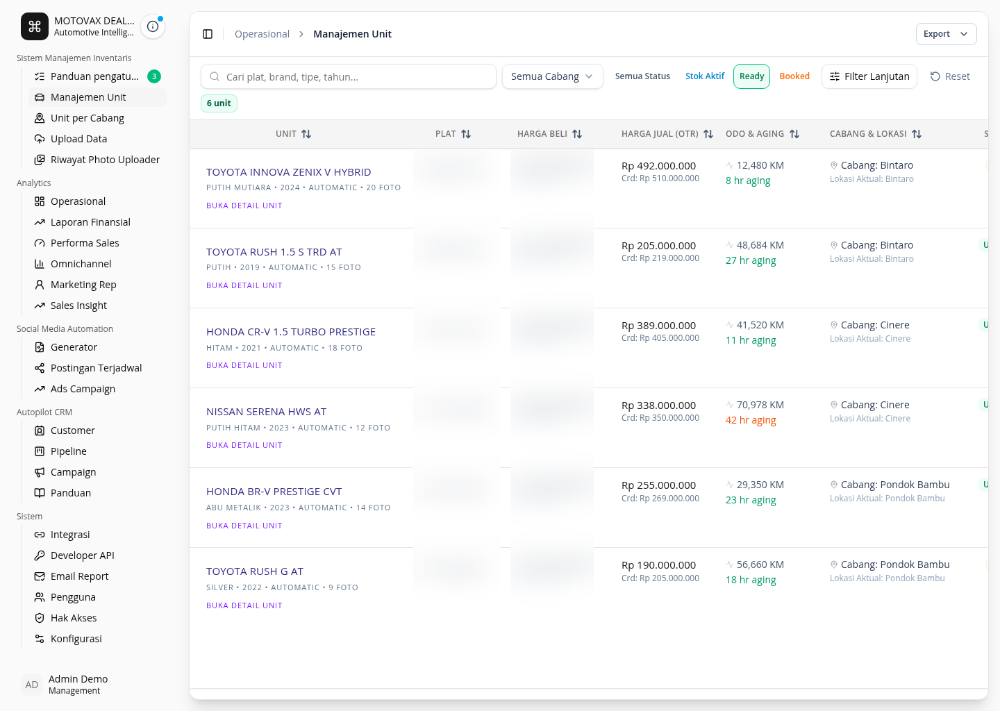

2026 · Automotive
MOTOVAX &
AgenMobix
Contributed to an automotive platform connecting vehicle inventory, leads, sales workflows, omnichannel interactions, and operational data. Built tenant-facing catalog experience for sales agents to browse and present available units.
